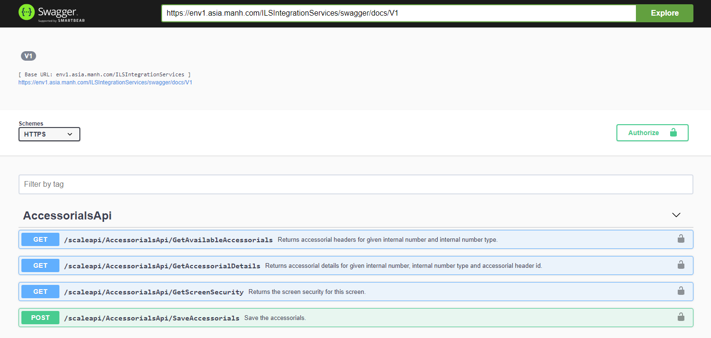

To launch Swagger, browse to URL https://environment.domain.com/ilsIntegrationServices/swagger. The API documentation will be available in swagger UI as shown below. Login to SCALE web screen prior to launching Swagger. Also, use the same host name in the swagger URL as used for launching the SCALE web screen.
Swagger consumes the same authorization token generated for the SCALE application during the login process. Therefore, while launching the Swagger application or invoking Web API using Swagger, if an “Invalid token” error occurs, refresh the SCALE application and perform the authorization steps.Refresh the Swagger application as well. To consume Swagger using other valid token pass token in Authorization header in request as
Authorization: Bearer <token>
New token can be passed or can be changed in the Swagger application using “Authorize” button available within the application.
Detailed Swagger documentation about APIs is available in JSON format at the doc URL. As it's available here at https://env1.manh.com/ILSIntegrationServices/swagger/docs/V1
